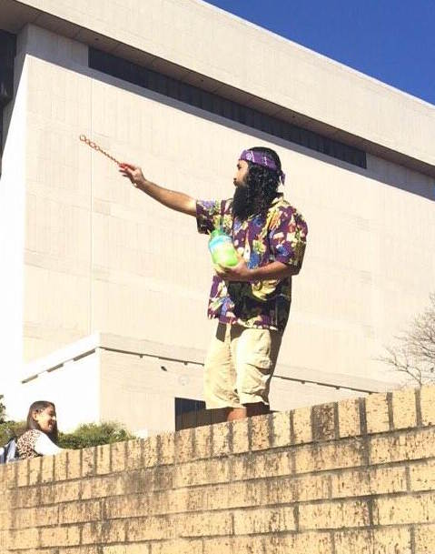

Bobcat Trivia
See how well you rank in Texas State University knowledge!
We'll start out easy...
1) What is 'the Quad?'
The downtown square with bars and nightlife.
A four-way intersection near the river.
The busiest central walkway on campus where events and booths are often set up.
A nickname for the many stairs going up to Alkek Library.
2) Who is this person often seen by Alkek?

The Bubble Guy!
Rainbow beard!
Frisbee Dan!
Big Neechi!
3) What is the oldest building at TXST?
Taylor-Murphy history.
Old Main.
Derrick.
Aquatic science.
4) How do you pronounce the park right next to campus?
"Sull"
What park?
"See-welle"
"Sew-oole"
5) What presidential alum's initials are found throughout campus?
Franklin Delano Roosevelt (FDR).
John Fitzgerald Kennedy (JFK).
Lyndon Baines Johnson (LBJ).
Martin Luther King (MLK).
6) What statue on campus is rubbed for good luck before exams?
The Stallions.
The Bobcat.
LBJ.
The Star.
7) Where did we get our school colors from?
The Gaillardia wildflower.
The founder's favorite colors.
A student body vote.
The star on top of college inn.
8) How many floors are in Alkek Library?
6
4
7
8
9) What dining hall was recently completely remodeled?
Commons.
The upstairs student center in LBJ.
Harris.
Jones.
10) What is the tradition for seniors after they graduate?
Jumping in the river.
Running through the quad.
Throwing their hats in the stadium.
Catching a bobcat.
Your grade is:
__